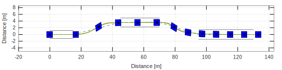
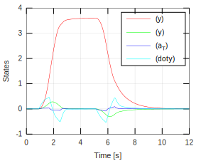

Steering Control of Autonomous Vehicles in Obstacle Avoidance Maneuvers.

Bicycle model

Nonlinear model
State vector
\[ {\bf x} = \left[ \begin{array}{c} {\rm x}1 \\ {\rm x}2 \\ {\rm x}3 \\ {\rm x}4 \\ {\rm x}5 \\ {\rm x}6 \end{array} \right] = \left[ \begin{array}{c} x \\ y \\ \psi \\ v{\rm T} \\ \alpha{\rm T} \\ \dot{\psi} \end{array} \right] \]
State equations
\[ \dot{{\rm x}}1 = {\rm x}4 \cos \left( {\rm x}3 + {\rm x}5 \right) \]
\[ \dot{{\rm x}}2 = {\rm x}4 \sin \left( {\rm x}3 + {\rm x}5 \right) \]
\[ \dot{{\rm x}}3 = {\rm x}6 \]
\[ \dot{{\rm x}}4 = \frac{F{y,{\rm F}} \sin \left( {\rm x}5 - \delta \right) + F{y,{\rm R}} \sin {\rm x}5}{m{T}} \]
\[ \dot{{\rm x}}5 = \frac{F{y,{\rm F}} \cos \left( {\rm x}5 - \delta \right) + F{y,{\rm R}} \cos \alpha{\rm T} - m{T} {\rm x}4 {\rm x}6}{m{T} {\rm x}4} \]
\[ \dot{{\rm x}}6 = \frac{F{y,{\rm F}} a \cos \delta - F{y,{\rm R}} b}{I{T}} \]
Slip angles
\[ \alpha{\rm F} = \arctan \left( \frac{v{\rm T} \sin \alpha{\rm T} + a \dot{\psi}}{ v{\rm T} \cos \alpha_{\rm T}} \right) - \delta \]
\[ \alpha{\rm R} = \arctan \left( \frac{v{\rm T} \sin \alpha{\rm T} - b \dot{\psi}}{ v{\rm T} \cos \alpha_{\rm T}} \right) \]
Linear model
\[ \dot{x} = v_{\rm T} \]
\[ \dot{y} = v{{\rm T},0} \left( \psi + \alpha{{\rm T}}\right) \]
\[ \dot{\psi} = \dot{\psi} \]
\[ \dot{v}_{\rm T} = 0 \]
\[ \dot{\alpha}{\rm T} = \frac{F{y,{\rm F}} + F{y,{\rm R}}}{m{T} v_{{\rm T},0}} - \dot{\psi} \]
\[ \ddot{\psi} = \frac{a F{y,{\rm F}} - b F{y,{\rm R}}}{I_{T}} \]
Neglecting equations of \(x\) and \(v_T\)
\[ \left[ \begin{array}{c} \dot{y} \\ \dot{\psi} \\ \dot{\alpha}T \\ \ddot{\psi} \end{array} \right] = \left[ \begin{array}{cccc} 0 & v{T,0} & v{T,0} & 0 \\ 0 & 0 & 0 & 1 \\ 0 & 0 & -\frac{KF+KR}{mT v{T,0}} & - \frac{mT v{T,0} + \frac{a KF - b KR}{v{T,0}}}{mT v{T,0}} \\ 0 & 0 & - \frac{a KF - b KR}{IT} & - \frac{a^2 KF + b^2 KR}{IT v{T,0}} \end{array} \right] \left[ \begin{array}{c} y \\ \psi \\ \alphaT \\ \dot{\psi} \end{array} \right] + \left[ \begin{array}{c} 0 \\ 0 \\ \frac{KF}{mT v{T,0}} \\ \frac{a KF}{I_T} \end{array} \right] \delta \]
Slip angles
\[ \alpha{{\rm F},lin} = \alpha{{\rm T}} + \frac{a}{v_{{\rm T},0}} \dot{\psi} - \delta \]
\[ \alpha{{\rm F},lin} = \alpha{{\rm T}} - \frac{b}{v_{{\rm T},0}} \dot{\psi} \]
Typical characteristic curve and slip angle definition

Pacejka
\[ F_{y} = D \sin \left[ C \arctan{B \alpha - E( B \alpha -\arctan(B \alpha))} \right] \]
Linear
\[ F_ y = K \alpha \]
deriva = (0:0.1:15)*pi/180; % ngulo de deriva [rad] % Pacejka tire parameters a0 = 1; a1 = 0; a2 = 800; a3 = 10000; a4 = 50; a5 = 0; a6 = 0; a7 = -1; a8 = 0; a9 = 0; a10 = 0; a11 = 0; a12 = 0; a13 = 0; TirePac = TirePacejka(); Fz = 4e+03; camber = 0; TirePac.a0 = a0; TirePac.a1 = a1; TirePac.a2 = a2; TirePac.a3 = a3; TirePac.a4 = a4; TirePac.a5 = a5; TirePac.a6 = a6; TirePac.a7 = a7; TirePac.a8 = a8; TirePac.a9 = a9; TirePac.a10 = a10; TirePac.a11 = a11; TirePac.a12= a12; TirePac.a13 = a13; muy0 = TirePac.a1 * Fz/1000 + TirePac.a2; D = muy0 * Fz/1000; BCD = TirePac.a3 * sin(2 * atan(Fz/1000/TirePac.a4))*(1-TirePac.a5 * abs(camber)); % Pneu linear equivalente Ktire = BCD * 180/pi; TireLin = TireLinear(); TireLin.k = Ktire; % Lateral force FyPac = TirePac.Characteristic(deriva, Fz, muy0/1000); FyLin = TireLin.Characteristic(deriva); % Graphics g = Graphics(TirePac);
Comparison of tire models
f1 = figure(1); ax = gca; set(ax, 'NextPlot', 'add', 'Box', 'on', 'XGrid', 'on', 'YGrid', 'on') set(ax,'xlim',[0 15]) p1 = plot(deriva * 180/pi,-FyPac, 'Color', 'r', 'Marker', 'o', 'MarkerFaceColor', 'r', 'MarkeredgeColor', 'k', 'MarkerSize', 3); p2 = plot(deriva * 180/pi,-FyLin, 'Color', 'g', 'Marker', 's', 'MarkerFaceColor', 'g', 'MarkeredgeColor', 'k', 'MarkerSize', 3); g.changeMarker(10,p1,p2); xlabel('\(\alpha\) [grau]', 'Interpreter', 'Latex') ylabel('\(F_y\) [N]', 'Interpreter', 'Latex') l = legend('Linear', 'Pacejka'); set(l, 'Interpreter', 'Latex', 'Location', 'NorthWest')

%
Nonlinear vehicle + Pacejka tire
% Choosing vehicle % System = VehicleSimpleLinear(); VehiclePlant = VehicleSimpleNonlinear(); % Defining vehicle parameters VehiclePlant.mF0 = 700; VehiclePlant.mR0 = 600; VehiclePlant.IT = 10000; VehiclePlant.lT = 3.5; VehiclePlant.nF = 1; VehiclePlant.nR = 1; VehiclePlant.wT = 1.8; VehiclePlant.muy = 1; VehiclePlant.tire = TirePac; VehiclePlant.deltaf = @ControlLaw; disp(VehiclePlant) % Choosing simulation T = 12; % Total simulation time [s] resol = 500; % Resolution TSPAN = 0:T/resol:T; % Time span [s] simulator = Simulator(VehiclePlant, TSPAN); simulator.V0 = 16.7;
Vehicle parameters
mT = 1300; IT = 10000; a = 1.6154; b = 1.8846; vT0 = 16.7; KF = Ktire; KR = Ktire;
Linear system
A = [ 0 vT0 vT0 0 ;...
0 0 0 1 ;...
0 0 -(KF+KR)/(mT*vT0) -(mT*vT0+(a*KF-b*KR)/(vT0))/(mT*vT0) ;...
0 0 -(a*KF-b*KR)/IT -(a^2*KF+b^2*KR)/(IT*vT0) ];
B = [ 0 ;...
0 ;...
KF/(mT*vT0) ;...
a*KF/IT ];
C = [1 0 0 0];A
disp(A)
B
disp(B)
C
disp(C)
LQR design
Q = [ 3 0 0 0 ;...
0 1 0 0 ;...
0 0 1 0 ;...
0 0 0 1 ];Q
disp(Q) R = 1;
R
disp(R) Klqr = lqr(A,B,Q,R);
Klqr
disp(Klqr)
Pole placement design
polos = [-6 -6.3 -6.7 -7]; Kplace = place(A,B,polos);
Kplace
disp(Kplace)
Control law
\[\delta = - {\bf K} {\bf z} + K_1 r \]
Control - Step y
Reference - r = 2 m
\[ \delta_{max} = \pm 70 deg \]
% Simulation simulator.Simulate(); g = Graphics(simulator); g.Frame('scalefig',3);
% Adding the double lane change track to the frame figure carWidth = 2; LaneOffset = 3.5; section1width = 1.1*carWidth + 0.25; section3width = 1.2*carWidth + 0.25; section5width = 1.3*carWidth + 0.25; section1Inf = -section1width/2; section1Sup = section1width/2; section3Inf = section1Inf+LaneOffset; section3Sup = section3Inf+section3width; section3Center = (section3Inf+section3Sup)/2; section5Inf = -section5width/2; section5Sup = section5width/2; % Section 1 plot([0 15],[section1Inf section1Inf],'k') % linha inferior plot([0 15],[section1Sup section1Sup],'k') % linha superior plot([0 15],[0 0],'k--') % linha central % Section 2 plot([15 45],[0 section3Center],'k--') % linha central % Section 3 plot([45 70],[section3Inf section3Inf],'k') % linha inferior plot([45 70],[section3Sup section3Sup],'k') % linha superior plot([45 70],[section3Center section3Center],'k--') % linha central % Section 4 plot([70 95],[section3Center 0],'k--') % Section 5 plot([95 130],[section5Inf section5Inf],'k') plot([95 130],[section5Sup section5Sup],'k') plot([95 130],[0 0],'k--') g.Animation('scalefig',3);
% Retrieving states XT = simulator.XT; YT = simulator.YT; PSI = simulator.PSI; VEL = simulator.VEL; ALPHAT = simulator.ALPHAT; dPSI = simulator.dPSI; x = [YT PSI ALPHAT dPSI]; u = zeros(length(TSPAN),1); output = zeros(length(TSPAN),1); LateralDisp = 3.6; for ii = 1:length(TSPAN) if XT(ii) <= 15 r = 0; end if XT(ii) > 15 && XT(ii) <= 70 r = LateralDisp; end if XT(ii) > 70 r = 0; end u(ii) = - Kplace*x(ii,:)' + Kplace(1)*r; % Saturation at 42 deg if abs(u(ii)) < 42*pi/180 output(ii) = u(ii); else output(ii) = sign(u(ii))*42*pi/180; end end % States f2 = figure(2); % set(f2,'PaperUnits','centimeters') % set(f2,'PaperPosition',[0 0 8.9 5]) % PaperPos = get(f,'PaperPosition'); % set(f,'PaperSize',PaperPos(3:4)) hold on; box on; grid on plot(TSPAN,YT,'r') plot(TSPAN,PSI,'g') plot(TSPAN,ALPHAT,'b') plot(TSPAN,dPSI,'c') xlabel('Time [s]') ylabel('States') l = legend('\(y\)','\(\psi\)','\(\alpha_T\)','\(\dot{\psi}\)'); set(l,'Interpreter','Latex','Location','NorthEast')
% Steering input f3 = figure(3); % set(f2,'PaperUnits','centimeters') % set(f2,'PaperPosition',[0 0 8.9 3.5]) % PaperPos = get(f,'PaperPosition'); % set(f,'PaperSize',PaperPos(3:4)) hold on; box on; grid on plot(TSPAN,output*180/pi,'k') xlabel('Time [s]') y = ylabel('\(\delta [deg]\)'); set(y,'Interpreter','Latex')